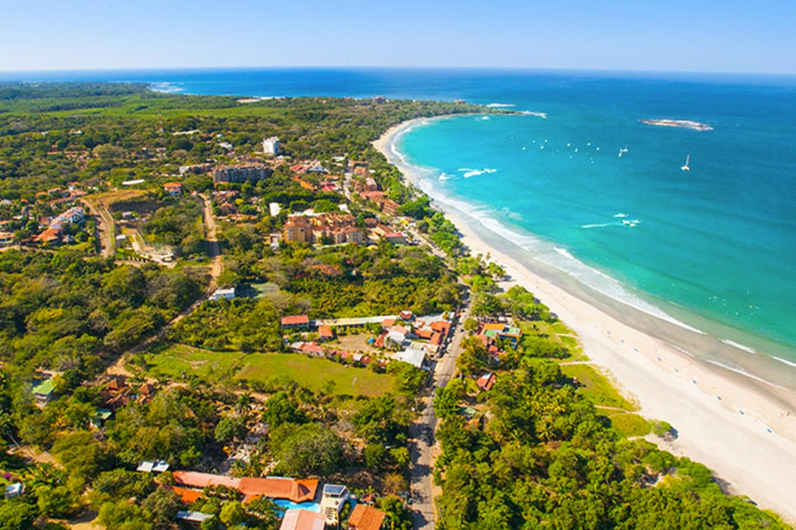
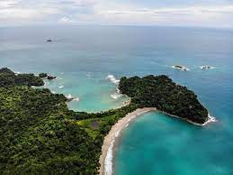

AmericaGo
Costa Rica
Costa Rica es un país compuesto por 7 provincias. Está ubicado en Centroamérica. Es un país que cuenta con varias zonas arqueológicas y es muy visitado por el turismo, siendo la tercera fuente de ingresos de la nación. Costa Rica ofrece una diversidad de condiciones en distintos ecosistemas, desde playas hasta selvas, montañas y ciudades. Además, se destaca por su gran desarrollo en diversos deportes, moda y salud.
Tamarindo

Tamarindo es un pueblo ubicado en la provincia de Guanacaste. Este antiguo pueblo pesquero se ha convertido en una comunidad turística con el tiempo, principalmente debido a sus playas famosas por sus fuertes oleajes, pero también incluye islas que hacen que la navegación en kayak sea muy interesante. Si visitas aquí, te podrían interesar las playas que se encuentran en la bahía de Tamarindo, como Playa Grande, Langosta y Ventanas. En cuanto a las islas, están Capitán y Verde, ubicadas a pocos metros de la costa.
Parque Nacional Manuel Antonio

El Parque Manuel Antonio es un área de conservación natural ubicada en la provincia de Puntarenas. Este parque alberga uno de los paisajes más impresionantes de Costa Rica. Cuenta con múltiples playas de arena blanca, manglares y bosques que rodean estas playas, con una gran variedad de flora y fauna. Además de su excelente clima y belleza, es un destino muy visitado por el turismo nacional e internacional.